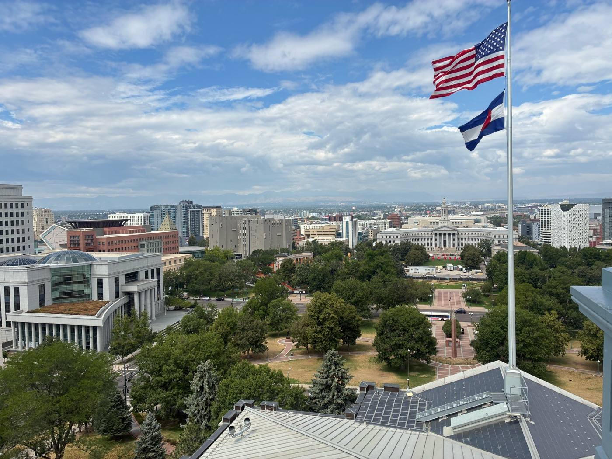
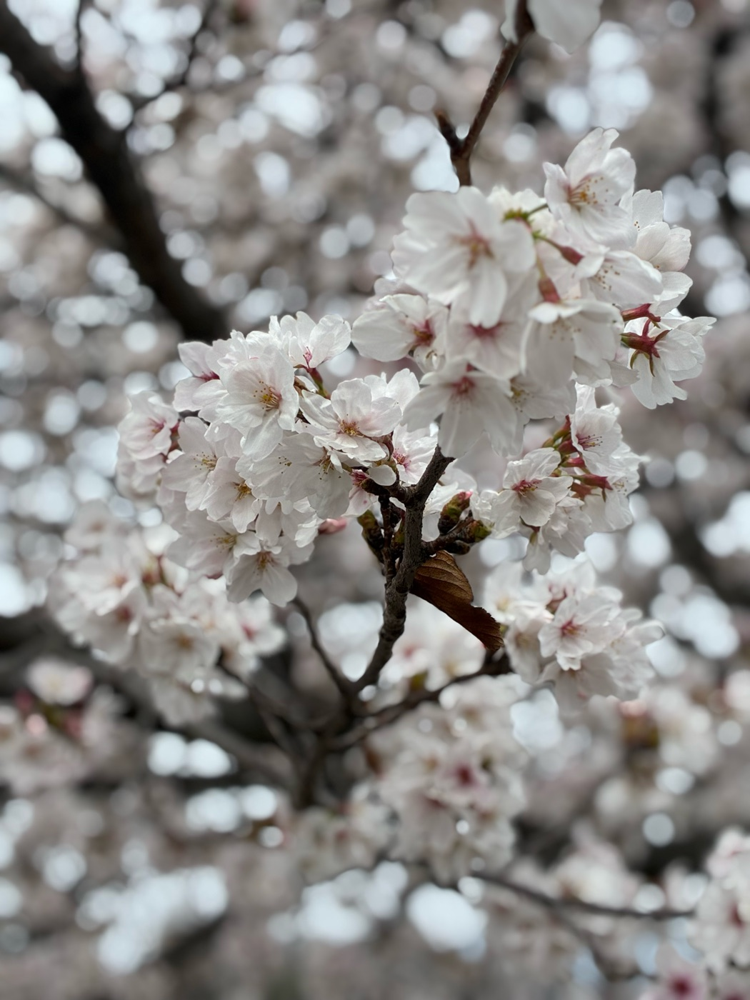
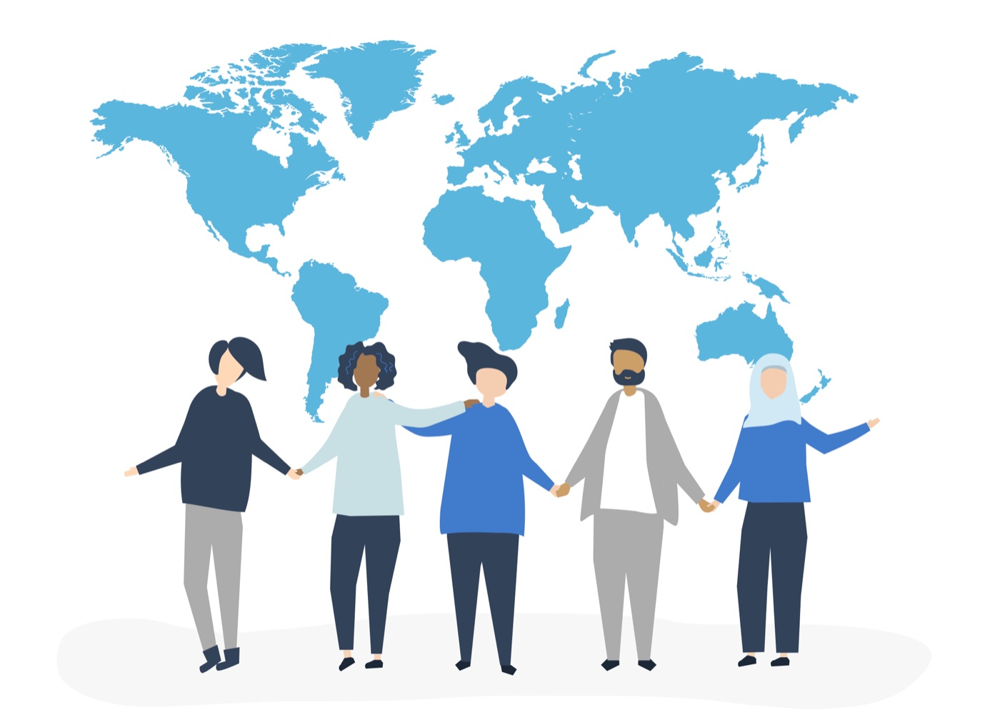

国際交流
外国人との交流や、日本文化を紹介する活動を通して、異なる文化を持つ人とのコミュニケーションを経験。
はじめまして、H.Yです。高校生として、国際交流支援や海外留学などに取り組んでいます。
現在はアメリカ・インディアナ州へ高校交換留学中。異なる文化や価値観に触れながら、「在日外国人が深い交流関係を築くための支援」を考えています。
About
2009年生まれ、岡山県出身。国際交流に関心を持ち、学校内外でさまざまな活動に取り組んでいます。
現在はアメリカの高校に交換留学生として在学中。現地の学校生活やホストファミリーとの生活を通して、アメリカの文化や教育について学んでいます。
これまでには、外国人観光客との国際交流、日本文化を学び、披露する活動などにも取り組んできました。
「自分が実際に経験したことを、誰かの新しい一歩につなげたい」という思いを大切にしています。
Skills
外国人との交流や、日本文化を紹介する活動を通して、異なる文化を持つ人とのコミュニケーションを経験。
「こんな機会があったらいい」を形にするため、企画の立案や情報整理に取り組んでいます。
Works

2026年7月からアメリカ・コロラド州・インディアナ州へ高校交換留学。
現地の高校に通いながら、アメリカの教育、学校生活、文化、地域社会について学んでいます。
留学中の経験を記録し、これから海外留学を考える学生に役立つ情報を届ける企画を考案しています。

外国人との交流を通して、日本の文化や魅力を紹介。
剣道・茶道や書道など、自分自身が学んできた日本文化を海外の人にも知ってもらい、日本に興味を持つきっかけをつくることを目指しています。
外国人観光客や日本に住む外国人との交流を通して、異なる文化や価値観について学ぶ活動を行っています。
「英語を話すこと」だけではなく、相手の文化や考え方を理解することを大切にしています。

Designed by Magnific日本語学校に通う外国人学習者と、国際交流イベントをつなぐ仕組みを企画。
日本語を学ぶだけでなく、日本人や他の在日外国人と接点を持つ機会を増やすことを目指しています。